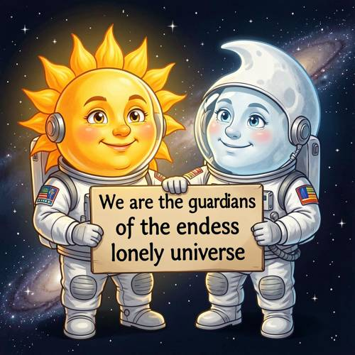
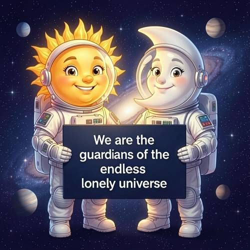
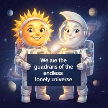
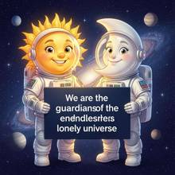

Text Generation — Generated image: An anthropomorphic sun and an anthropomorphic moon, b
Generated image: An anthropomorphic sun and an anthropomorphic moon, both wearing spacesuits and holding a sign that says "We are the guardians of the endless lonely universe" in English

Direct — one call, no iteration

Continuum — Kimi K3 + FLUX.2-klein-9B
Judge — Direct
FAILText Generation — The image displays a sign held by the two figures. The text on the sign reads, 'We are the guardians of the endess lonely universe'. The word 'endless' is misspelled as 'endess', which means the text was not generated accurately.
PASSGrammar - Consistency — The image shows an anthropomorphic sun on the left and an anthropomorphic moon on the right. Both figures are depicted wearing white spacesuits with helmets, gloves, and boots.
Judge — Continuum
PASSText Generation — The image contains a dark rectangular sign held by two figures. The sign displays the text 'We are the guardians of the endless lonely universe' in white font. The text is spelled correctly and matches the phrase specified in the prompt without any omissions or extra words.
PASSGrammar - Consistency — The image features an anthropomorphic sun and an anthropomorphic moon. Both figures are depicted wearing identical white spacesuits, including helmets, gloves, and boots, fulfilling the requirement for a shared attribute.
What the agent did
Thinking
We need need generate image. Prompt. Need use flux2-klein fixed, no seed, maybe dimensions? Harness likely unspecified, default 1024 square. Need formulate detailed visual. Text long and difficult. We need generate, inspect, verify text via crops. We should call generate.
Step 1 — `generate_image`
{
"model": "flux2-klein",
"prompt": "A charming cinematic illustration of two anthropomorphic celestial characters standing side by side in deep outer space: on the left, a bright golden sun with expressive cartoon eyes and a friendly smile, its corona rays extending from the helmet; on the right, a pale crescent-shaped moon with expressive eyes and a gentle smile. Both characters wear detailed white astronaut spacesuits with clear glass helmets, gloves, boots, control panels, and soft cosmic rim lighting. Together they hold one large rectangular dark-blue sign across the front of their bodies, clearly displaying the exact English text \u201cWe are the guardians of the endless lonely universe\u201d in clean, legible white capital-like lettering arranged over three lines. A star-filled indigo universe, distant planets, and a faint galaxy behind them. Whimsical, polished, high-detail digital art, centered composition, full bodies visible, sign unobstructed and facing the viewer.",
"width": 1024,
"height": 1024
}
Result img_0

Thinking
We have image. Text typo "guadrans" likely "guardians", also line break no issue. Need verify exact sign. It's readable. Need edit targeted. Must use flux2-klein edit. Prompt only change text, name incorrect/correct. Could maybe split into one. Need edit image img_0. "On the sign, replace the misspelled word 'guadrans' with 'guardians', preserving all other text exactly..." Concrete.
Step 2 — `edit_image`
{
"image": "img_0",
"model": "flux2-klein",
"prompt": "On the dark blue sign, replace only the misspelled word \u201cguadrans\u201d with the correctly spelled word \u201cguardians\u201d, keeping the same clean white lettering, line breaks, size, and every other word unchanged."
}
Result img_1

Thinking
Oops corrupted entire sign: "guardiansof" no space and "enendlesrters". Worse. Need mark earliest? Since img_0 better though typo one word. We can mark img_0 now as best fallback. Then perhaps edit from img_1 correcting text wholesale, or img_0 inpaint sign. Need likely exact text. We can use edit on img_1 replacing full sign text with exact phrase, preserving layout. Since already corrupt, maybe targeted edit entire sign. We need mark img_0 as best. Then edit img_1? Can use img_1 and instruct entire sign. It may work. But requirement says for text name incorrect string and correct one, don't redescribe. Could use references img_0? Maybe references to preserve scene and sign layout. Prompt: "Replace the text on dark blue sign with exactly: We are the / guardians of the / endless / lonely universe. Keep line breaks ... preserve illustration." This is targeted. It could render exact. Better from img_0 perhaps instruct change all sign text, preserving rest. Qwen/flux2-klein. Use references maybe img_0. Need maybe the model can spell. The first generation had only one typo. Could inpaint sign entirely with mask and prompt exact text, but text fill perhaps. Yet no need pixel exact outside. We can edit image img_0 with exact phrase perhaps could corrupt. Current img_1 demonstrates corruption. We can try another edit from img_1 to correct all sign. If fails, maybe inpaint text region. But pixel exact outside nice. Need segmentation mask of sign? Could use box mask approximating sign (x190-574, y382-612). Then inpaint prompt sign content. But inpainting with FLUX Fill may not preserve gloves occluding sign? Mask sign including behind gloves could erase gloves if prompt sign only, unless prompt includes "dark blue sign held by gloves" but region includes gloves. Alternatively crop sign and inpaint all; gloves could remain if mask excludes? Segment sign maybe. But use edit first. Mark img_0.
Step 3 — `mark_best`
{
"image": "img_0",
"reason": "The overall scene is strong and the sign is highly legible, with only one spelling error in \u201cguardians\u201d; the later edit corrupted more words."
}
Thinking
Now edit img_1. Could perhaps use edit_image references img_0? Since prompt tells preserve overall composition from reference. But user says references visual details. We can write "Preserve the two astronaut characters, background, and dark sign layout from the reference image; replace only all wording on the sign with..." This is one change, text replacement. It may still alter more. Since starting img_1 and reference img_0, maybe bring back clean layout. Let's do.
Step 4 — `edit_image`
{
"image": "img_1",
"model": "flux2-klein",
"prompt": "Replace only the wording on the dark blue sign with the exact four-line text:\n\u201cWe are the\u201d\n\u201cguardians of the\u201d\n\u201cendless\u201d\n\u201clonely universe\u201d\nPreserve the sign\u2019s clean white lettering, centered layout, and the surrounding artwork from the reference.",
"references": [
"img_0"
]
}
Result img_2
Thinking
Looks exact! Need verify with inspect_region on sign. Use inspect.
Crop seems wrong? Padding? It gave upper-left portion due maybe coordinates absolute from displayed 768 not original 1024? Image is 768? Actually generated image output appears 768x768 despite request 1024? inspect coordinates used 575 and cropped x? It seems only sign left edge at x82 and text cut right. Maybe inspect output crop 441x281; image actual maybe 768. Need crop actual sign maybe coordinates scale. Let's inspect region with normalized coordinates: sign from x0.25 to0.75, y0.495 to0.80. Use normalized.
Exact spelling, capitalization? Requested text says "We are the guardians of the endless lonely universe" exactly. Image line breaks, but continuous phrase exactly. It uses lowercase except We. Correct. Great. Need mark_best img_2. Then final concise. Ensure last action check mark? mark.
Step 7 — `mark_best`
{
"image": "img_2",
"reason": "Both anthropomorphic celestial astronauts and the complete requested sign are present, with the sign text verified as exactly correct and clearly legible."
}
Model
Done — the final image is marked, and the sign text has been verified as: **“We are the guardians of the endless lonely universe”**